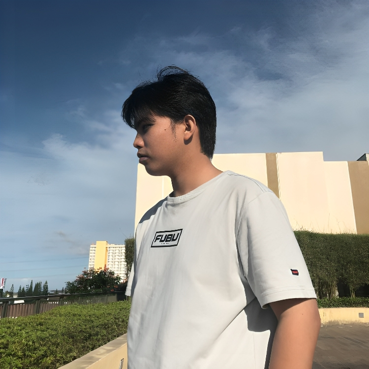

I am Kim Bernard D. Antonio, currently a third-year college student currently pursuing a Bachelor of Science in Information Technology.
Born in March 2003, I’ve always been deeply fascinated by the world of technology especially in understanding how websites are built and function behind the scenes.
I am a persistent and optimistic individual who values growth, purpose, and learning. My passion lies in web development,
and I aspire to become a professional web developer, capable of building visually appealing, efficient, and user-friendly digital experiences.